Telecommunications · IP Multimedia Subsystem (IMS) · VoIP / IPTV / VoLTE
IMS Multimedia Services — VoIP, IPTV & VoLTE
Independent project on IP multimedia services around an IMS core: VoIP on Cisco Unified Communications (CUCM 8.6 and a three-router GNS3 network with a branch CME), IPTV streaming over the LAN with VLC, and VoLTE simulated in OPNET Modeler with an IMS core connected to the PSTN, plus an IMS case study for a fixed-line and a mobile operator. The same service areas were then rebuilt as a reproducible open-source lab with measured results.
System overview

Author
Mohammed Mahyoub
Role
Team design, implementation and testing of the project; design, implementation and testing of the reproducible lab.
VoIP (Cisco)
CUCM 8.6 on VMware; HQ voice gateway (H.323 to CUCM), branch router with Cisco Unified CME for survivability, and a PSTN router in GNS3. VoIP dial-peers, G.711 codec class, H.323↔SIP interworking, TFTP provisioning and Extension Mobility; SCCP and SIP endpoints including Android.
IPTV
VLC streaming over HTTP and UDP with optional transcoding, watched on laptops and mobile phones.
VoLTE (OPNET)
LTE-like access built from the 802.16e model (4 cells, OFDMA 20 MHz, 2×1 MIMO, Gold UGS voice class) with a P/I/S-CSCF + HSS core and PSTN interworking; voice traffic, handovers, jitter, delay and throughput measured.
Case study
Three IMS adoption paths for a fixed-line (PTC) and a mobile operator (Yemen Mobile): NGN upgrade, converged core (HSS/SLF, SBC, PCRF options) and two new IMS cores.
Reproducible lab
Kamailio P-CSCF/S-CSCF + Asterisk AS with digest registration and iFC service routing; G.711 over a congested 10 Mbit/s trunk: FIFO MOS 1.83 vs EF/CS3 priority MOS 4.27; IPTV multicast with IGMP snooping halves trunk traffic for two viewers.
Engineering rationale
Separate the two evidence sets
The project material describes Cisco CUCM/CME voice services, VLC IPTV and OPNET analysis of an LTE-like access network and IMS core. The reproducible extension uses Kamailio, Asterisk and Mininet. Its measured QoS figures must not be presented as measurements from a commercial operator network.
Signalling and media
SIP registration and call setup are control exchanges; voice and IPTV carry the media. A call that registers successfully may still suffer media loss or delay, which is why the documentation includes signalling flow and traffic measurements.
QoS and multicast
The committed experiments compare congested FIFO with EF/CS3 priority treatment and compare multicast distribution for multiple IPTV viewers. Read MOS, loss and traffic-volume charts with the stated topology, workload and measurement assumptions. They are evidence for the experiment rather than a universal service guarantee.
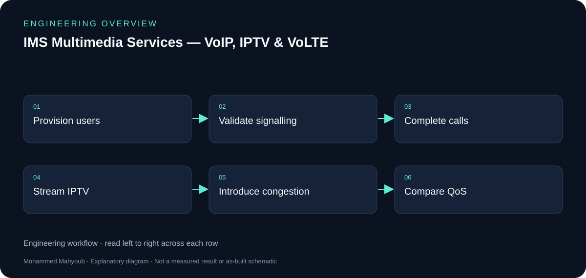
Evidence and validation
Suggested evidence checks for reviewing this work. These are not claimed pass results.
- Registration and call setup traces
- Successful media paths
- Delay/loss/MOS measurement assumptions
- Multicast subscriptions and trunk traffic
Source gallery
Figures from the existing project repository, public notebook outputs, or corresponding LinkedIn project media. Original screenshots and existing explanatory figures retain their source context.

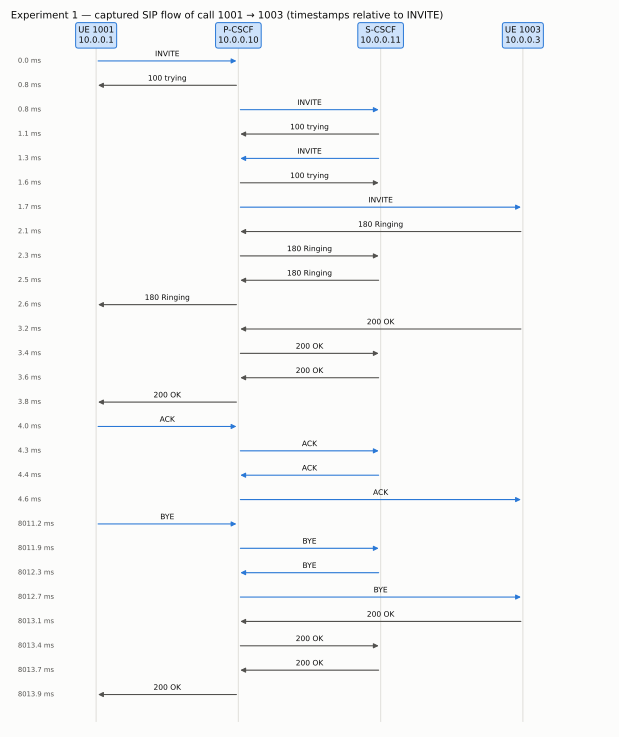

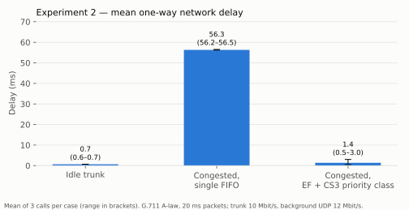

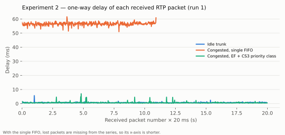

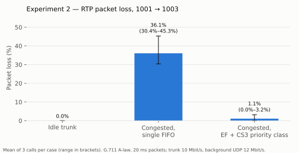

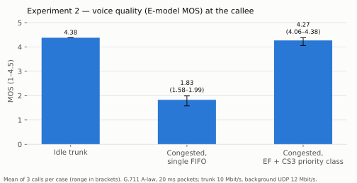

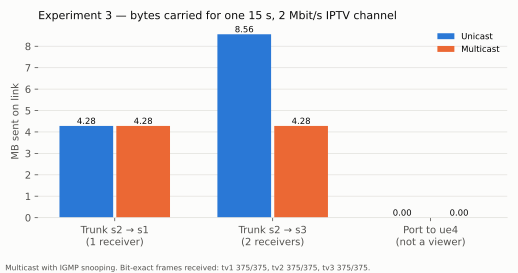

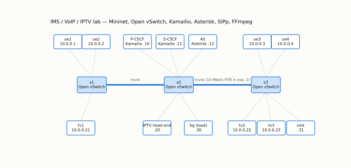

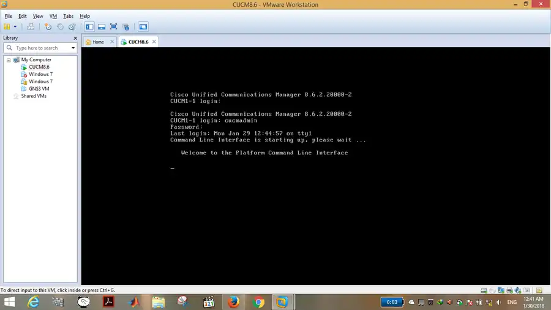

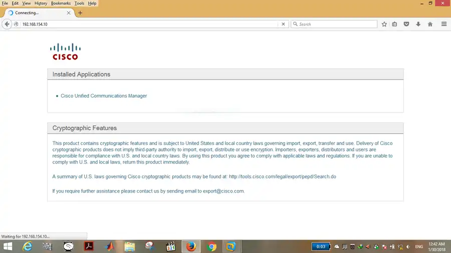

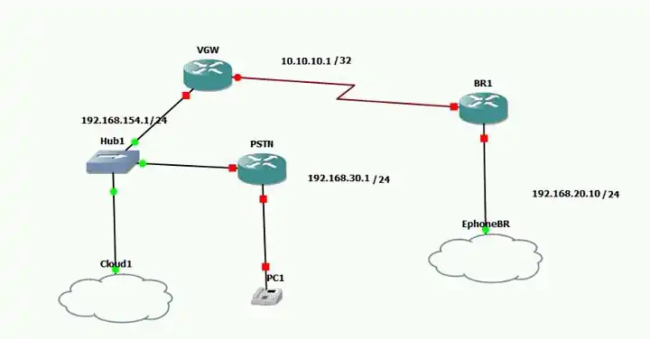

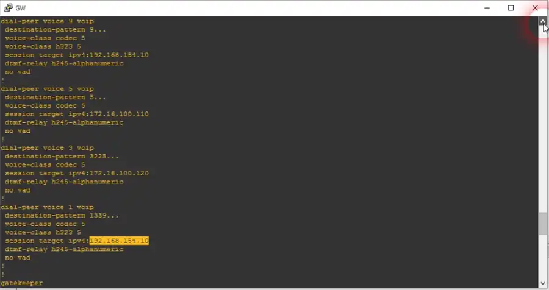

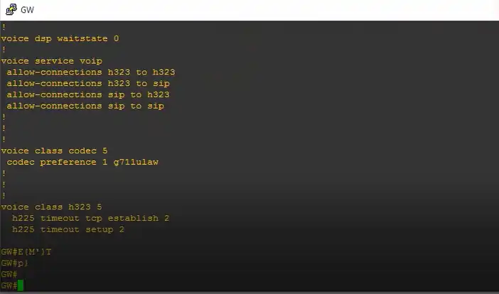

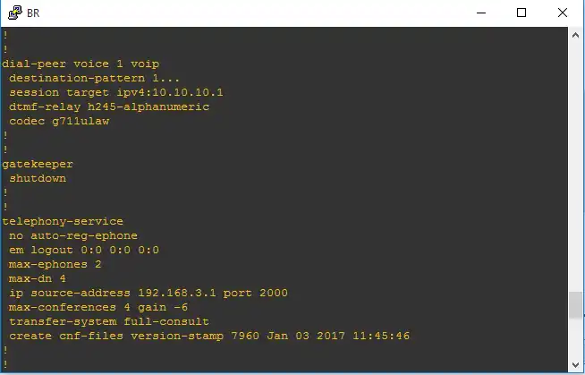

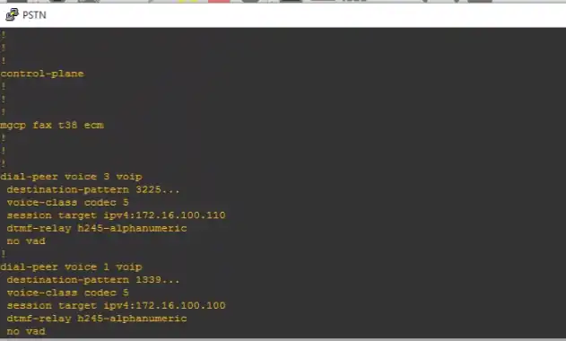

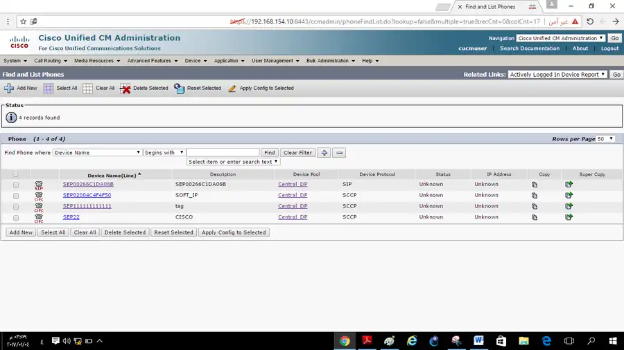

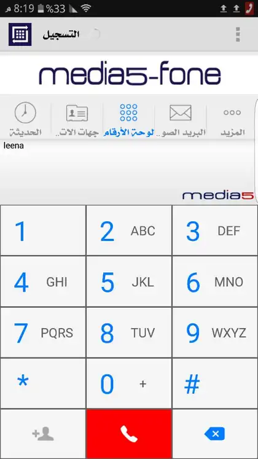

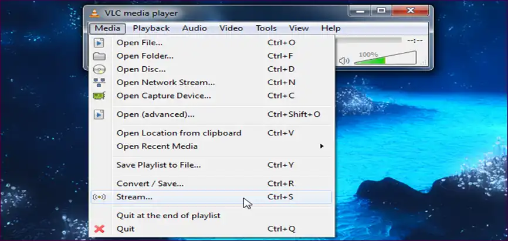

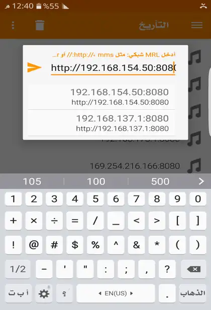

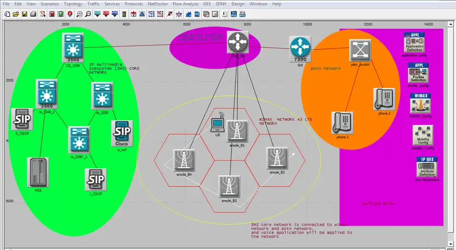

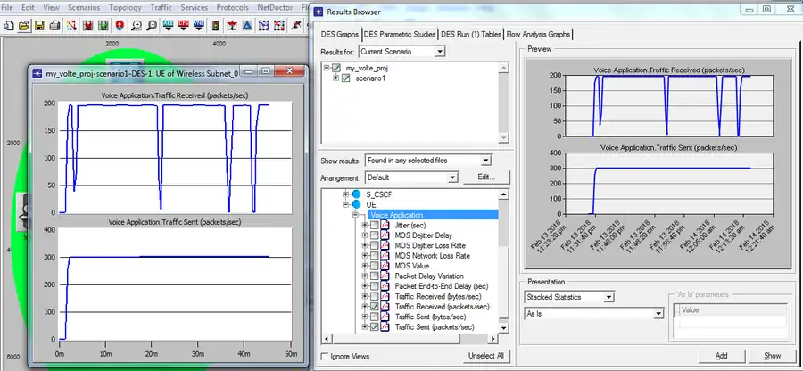

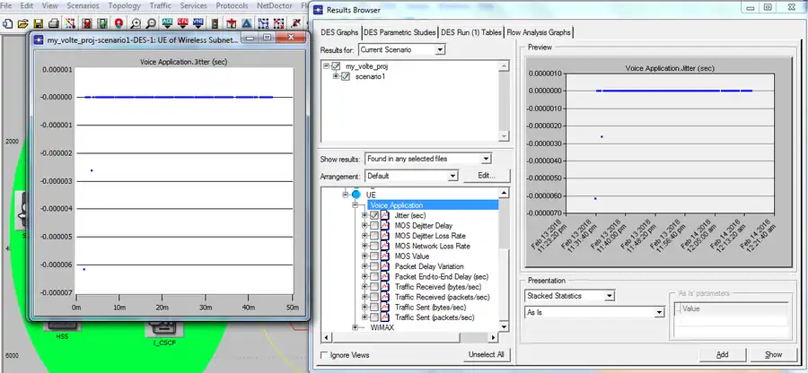

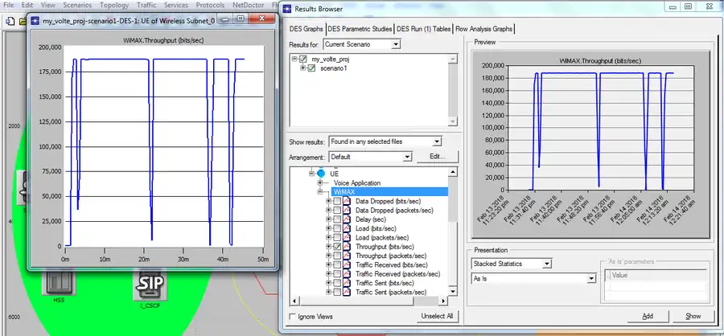

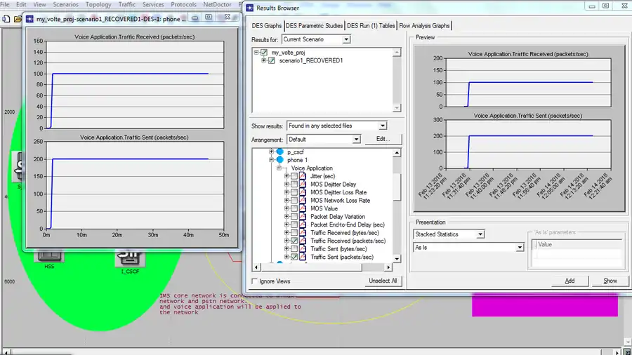

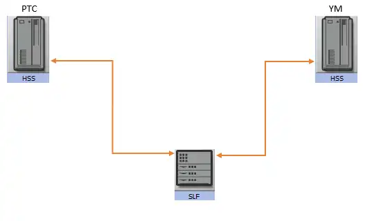

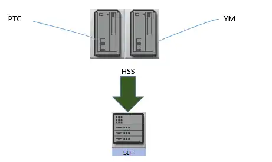